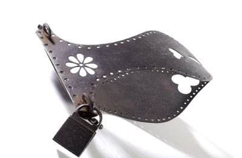
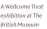

|
Gallery
Talks:
4, 9, 29 October
|

|
|
Room
5
Until 16 November
Admission free
Henry
Wellcome, the great entrepreneur and philanthropist, also
built up the world's largest collection of medical exhibits,
By his death in 1936, he had amassed an extraordinary collection
of over one million objects related to medical history, ranging
from diagnostic dolls and Japanese sex aids to African masks
and amputation saws, from amulets and ancient manuscripts
to Napoleon's toothbrush and George III's hair. Their exhibition
brings together the treasures of this vast collection and
explores the history of our bodies, in sickness and in health.
>
Buy exhibition book
>
Enter
the Medicine Man website
|
|